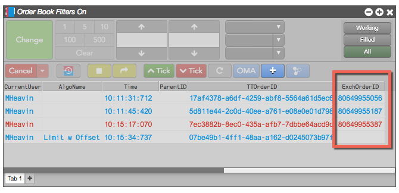
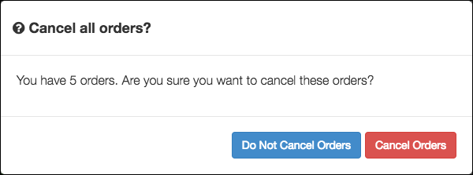
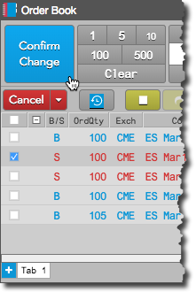
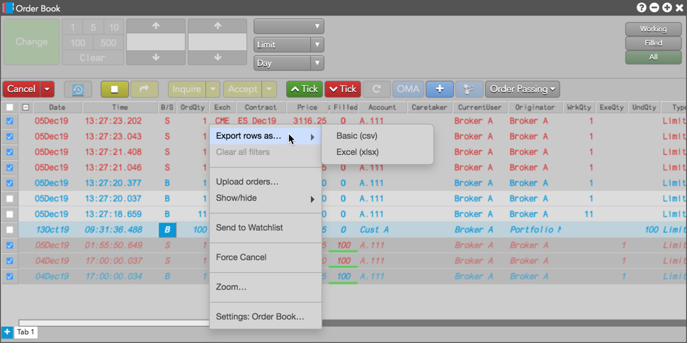

Trade Reference ID
You can view information for orders and block trades in the Order Book widget, as well as the Audit Trail and Fills widgets.
All exchange-provided Trade Reference IDs appear in the ExchangeOrderID column as shown in the image below.

Order confirmation in the Order Book
You have the option to confirm order cancellations when using "Cancel All", as well as confirm changes to working orders in the Order Book widget. This functionality is enabled using the "Cancel all" and "Modifications to working orders" settings on the Orders tab in workspace Preferences.
When the Cancel all preference is enabled, you'll be prompted to confirm the cancellation after you click Cancel All. Order cancellations are not submitted until you click Cancel Orders to confirm.

When the Modifications to working orders preference is enabled, the "Change" button displays "Confirm Change" when a working order is modified in the Order Book. Order changes are not submitted until you click Confirm Change.

Viewing orders from previous sessions
When "Include orders from previous sessions" is enabled in your local settings, scrolling to the bottom of the orders pane may show the Load older records button. You can click this button to retrieve the next batch of data in chronological order.

Exporting Order Book rows
You can also export Order Book rows to a .csv or .xlsx file. Select the rows you want to export, right-click in the selection, and click the the Export Rows as... context menu that appears. The selected fills are exported to a .csv or .xlsx file in your computer's download folder.
